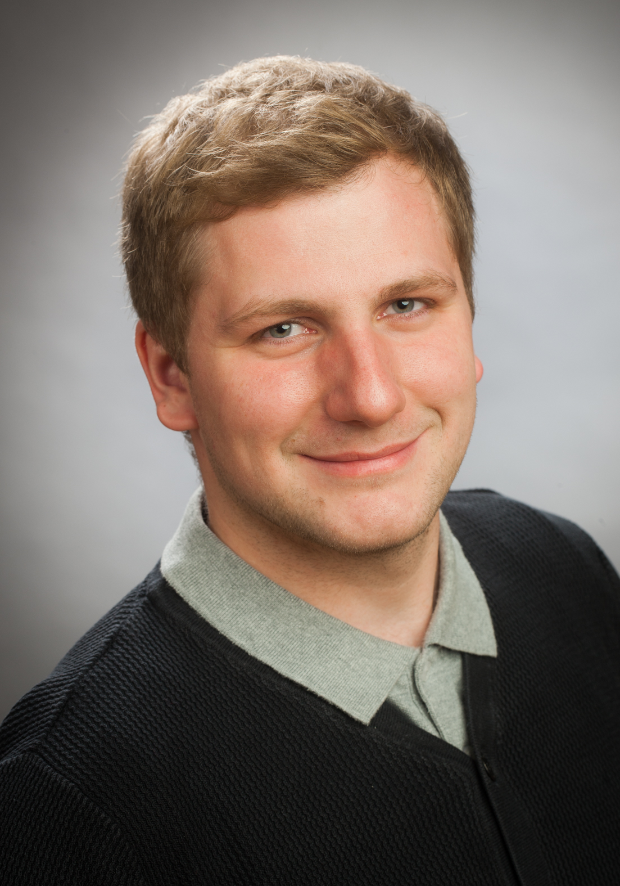

Landwirtschaftliche Praxis
Ich verstehe Maschinen, Wartung, Dokumentation und die Arbeitsweise landwirtschaftlicher Betriebe aus eigener Erfahrung.
AI Product Builder
AgrarTech & Software Entwickler
Ich entwickle digitale Produkte, die Landwirtschaft smarter, effizienter und praktischer machen. Mit KI. Mit Code. Mit echter Erfahrung aus der Landwirtschaft.

Focus
Kenntnisse & Fähigkeiten
Ich komme aus der Landwirtschaft, habe Frontend-Entwicklung gelernt und mit ChatGPT und Codex ein eigenes SaaS-Projekt aufgebaut. Meine Stärke liegt dort, wo echte Praxis, Produktdenken und KI-gestützte Umsetzung zusammenkommen.
Ich verstehe Maschinen, Wartung, Dokumentation und die Arbeitsweise landwirtschaftlicher Betriebe aus eigener Erfahrung.
Ich entwickle moderne Oberflächen, Landingpages, Produktlogik und digitale Anwendungen mit klarem Nutzerfokus.
Ich arbeite mit ChatGPT und Codex, strukturiere Aufgaben sauber und bringe Ideen iterativ in funktionierende Software.
Remote-Rollen im Bereich AI Product Building, AI Automation, AgrarTech, Junior Fullstack, SaaS oder technische Produktentwicklung passen besonders gut zu meinem Profil.
MVPs, Prototypen, Produktideen und schnelle Umsetzung mit modernen KI-Workflows.
Nutzerführung, Conversion, klare Kommunikation und Produktlogik mit Blick auf echte Anwender.
Ich zerlege Aufgaben, arbeite mich durch Probleme und bringe Projekte Schritt für Schritt nach vorne.
Ich arbeite produktorientiert und entwickle Anwendungen für reale Probleme, Prozesse und Arbeitsabläufe.
MaschinenLog ist mein eigenes SaaS-Projekt für Maschinenverwaltung, Wartungsdokumentation und digitale Organisation rund um Landtechnik.
Das Projekt zeigt meine eigentliche Stärke: Ich verstehe ein reales Branchenproblem, übersetze es in Produktlogik und setze es mit KI-gestützter Entwicklung schrittweise um.
Leadgenerierung & Datenexport
Ein browserbasiertes Tool zur strukturierten Leadgenerierung über Suchparameter, regionale Eingrenzung und späterer Google-Places-/Maps-API-Anbindung. Leads können als CSV oder JSON exportiert und anschließend mit einem LLM bewertet und sortiert werden.
Eigenentwickelte Rechnungs- und Verwaltungsanwendung zur Organisation persönlicher Geschäftsprozesse.
Die Anwendung enthält Kundenverwaltung, Rechnungslogik, PDF-Erstellung, Speicherfunktionen und eine moderne Benutzeroberfläche.
Ein statisches Sci-Fi-Browsergame als spielbarer Prototyp mit Canvas, Startscreen, HUD und modularer JavaScript-Struktur.
Das Projekt zeigt schnelle Produktvisualisierung, Interaktion und atmosphärische UI direkt im Browser.
Eine interaktive Erlebniswebseite mit ruhiger visueller Führung und emotionaler Dramaturgie.
Der vorhandene Projektordner bleibt unverändert und wird von dieser Hauptseite direkt verlinkt.
Praxiswissen über Maschinen, Betriebe, Wartung und reale Prozesse in der Landwirtschaft.
HTML, CSS, JavaScript, UI-Aufbau und Grundlagen moderner Webentwicklung.
Eigenes SaaS-Projekt mit Maschinenverwaltung, Service-Dokumentation, Rollen, Marketplace-Ideen und Billing-Konzepten.
Spannend sind Rollen als AI Product Builder, AI Automation Specialist, Junior Fullstack Developer, AgrarTech-Mitarbeiter oder technischer Produktentwickler.
Direktkontakt: Struve94@web.de